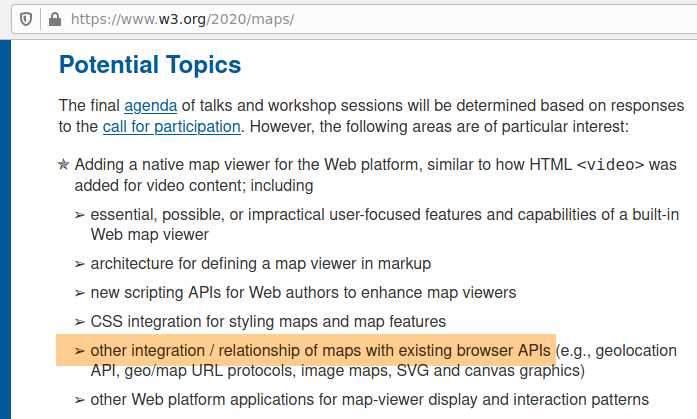
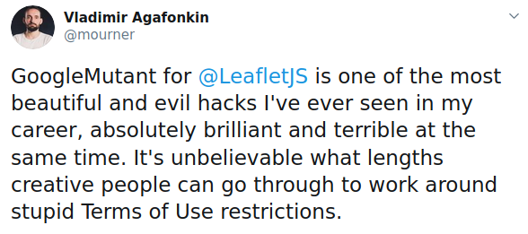

Map adventures in weird web standards
gyroscopes joysticks, texture cubes, and mutants
Iván Sánchez Ortega
Brief bio
- Nerd
- Learned BASIC on a Spectrum
- CompSci dropout
- Bought a GPS in 2006
- Doing tiled vector maps since experimental canvas
Afilliation Allegiances
- OpenStreetMap
- OSGeo
- Leaflet
(Opinions and thoughts are my own)
I'm EXTREMELY SKEPTICAL of the MapML proposal.
...and I wrote a lengty essay about that:
https://ivan.sanchezortega.es:444/politics/2020/08/13/mapml-essay-tldr.html
15-minute talk means I gotta focus,
So let me focus on this part of the XKCD joke

There are literally hundreds of Leaflet plugins,
and each of them is a use case...
Focus even more: Leaflet stuff which aligns with the workshop themes
Browser APIs you (probably) didn't even knew existed:
-
Sensors APIGamepad API - WebGL2's texStorage3D()
- DOM Mutation Observers
Part I:
Gyroscopes Joysticks
Hwo does the user interact with the map?
- Mouse & touchscreen via PointerEvents
- Keyboard via KeyboardEvents
- Follow the user via the geolocation API
- Rotate the map with compass orientation through RelativeOrientationSensor
- Tilting a phone/tablet and getting gyroscope data through AbsoluteOrientationSensor
- Joysticks via the Gamepad API
Joystick control feels good
This must be useful for something, but I don't know what yet
Accesibility? Haptic peripherals? WebVR?
Can I have joystick/gamepad control in MapML?
How are developers supposed to hack/extend user interaction in MapML?
Part II:
Texture cubes
- Replace tiled <img>s with tiled <canvas>es, each receiving a copied buffer from WebGL
- GLSL fragment shaders applied to 2D textures from RGBA PNG map tiles
- «This is useful for something. I don't know exactly what for, but it is.»
- 2d rasterization engine
- 4-dimensional vectors
- buttloads* of linear algebra
- Images as textures
- Layperson: Textures are images, 8-bit RGB(A)
- Videogame devs: Textures are images plus bump plus specular map plus etc, as 5-5-6-bit or 16-bit or float32 format
- GIS nerds: Raster holds temporal/multispectral/thematic data, several 16- or 32-bit samples per pixel
Breakthrough: realizing that GIS raster data fits natively in GL textures
Store data packed in WebGL1 RGBA textures
let data = geotiff.readRasters({
window: [x1, y1, x2, y2],
samples: [0],
width,
height
});
gl.texImage2D(data, 0, gl.RED, width, height, ...)...and read the data from a GLSL shader
float texelColour = texture2D(
geoTiffTexture, texCoords.st).r;
WebGL2 introduces:
- (IEEE574) float32 textures
- 3d textures = datacubes
let data = geotiff.readRasters({
window: [x1, y1, x2, y2],
samples: [0,1,2,3,4,5,6],
width,
height
});
gl.texImage3D(gl.TEXTURE_2D_ARRAY, data, 0, gl.F32, width, height, ...)// Fetch data from a sample, sample is the Z coordinate of the texture
float data = texture(geoTiffTexture,
vec3(texCoords.st, sampleIdx));
// Or do vertical slices of the datacube
float data = texture(geoTiffTexture,
vec3(sampleIdx, texCoords.st));
Mandatory buzzword-full slide
Real-time GPU-accelerated cloudless edge computing for cloudless imagery, not absent of monetization challenges.
Prediction: by 2023, every GIS person working with raster data will say: «How did we ever work without this?»
Forget about SVG.
How can we squeeze visualization performance?
How do we make non-3D GL more accessible to developers?
Part III:
Mutants
Let me present a fact:
Leaflet users want to display Google Basemaps.
And it's easy!
L.tileLayer(
"https://mt0.google.com/vt/lyrs=s&hl=en&x={x}&y={y}&z={z}&s=Ga"
).addTo(map);...but.
...but Google's Terms of Service (as of 2018) were explicit about not doing this:
10.1 Administrative Restrictions.
No access to APIs or Content except through the Service. You will not access the Maps API(s) or the Content except through the Service. For example, you must not access map tiles or imagery through interfaces or channels (including undocumented Google interfaces) other than the Maps API(s).
Wording of the current ToS is not clear; can I/we have a clarification, please?
Pretty please with sugar on top?
Workaround: Use gmaps JS API and move it
...but there're noticeable lags.
Workaround: Steal the tiles
...but when do new tiles come in?
Enter MutationObserver
var googleMutant = L.DomUtil.create('div', 'leaflet-google-mutant');
var map = new google.maps.Map(googleMutant, /* map options */);
observer = new MutationObserver(onMutationCallback);
// Observe subtree additions in particular
observer.observe(googleMutant, { childList: true, subtree: true });
function onMutationCallback(mutations) {
// Iterate through mutations
// Iterate through DOM nodes in a mutation
// If mutated node is a tiled image:
// Steal the tile
}«Absolutely brilliant and terrible at the same time»
 https://twitter.com/mourner/status/1300719192627347456My (controversial?) hard point of view:
- Vendors should expose standard interfaces
- Authors should be able to cache map assets
- Clients should be able to P2P map assets
- DOM mutation observers shouldn't exist
- GoogleMutant shouldn't exist
I bet that MapML shall not:
- Make vendors expose standard interfaces
- Let authors cache map assets
- Let clients P2P-exchange map assets
- Deprecate browser APIs of dubious utility
- Stop people from doing ugly hacks
...read the essay later!
https://ivan.sanchezortega.es:444/politics/2020/08/13/mapml-essay-tldr.html
...read the essay later!
https://ivan.sanchezortega.es:444/politics/2020/08/13/mapml-essay-tldr.html